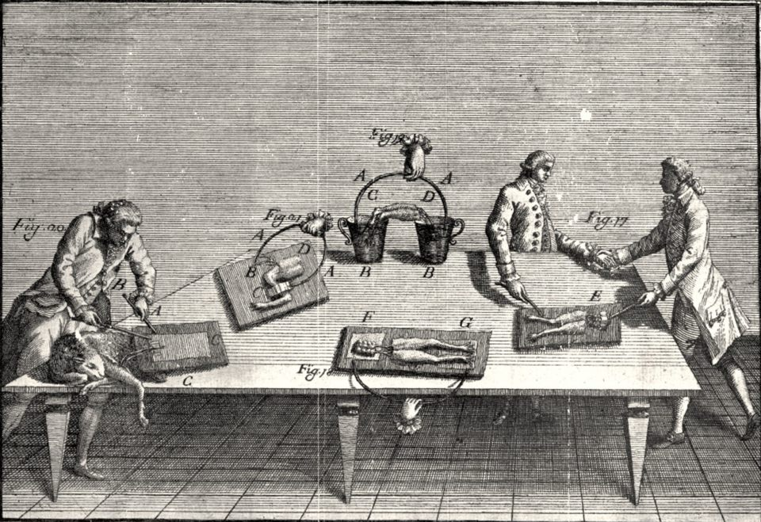

La Masson 2002Luigi Galvani, plate IV from De viribus electricitatis in motu musculari, 1791

La Masson 2002Luigi Galvani, plate IV from De viribus electricitatis in motu musculari, 1791
The A-R3 scenarios, why the Neural ODE cannot learn, the DESCARTES-NeuralODE search with an LLM in the loop, eleven architectures that all predict spikes through alien internals, the auxiliary-loss sweep, and the preparations for an L5 pyramidal replication — one hundred and twenty-five questions and their answers
A-R3b trains with increasing biological supervision. The results separate three explanations — zombie by choice, by information loss, by incapacity — and give a hierarchy: slow synaptic conductances become decodable, fast gates never do.
The bio term is learned on training trials but does not generalise to held-out trials; spike loss sits at the zombie level and the learning rate is decaying again.
This is your A-R3b run — the auxiliary biological loss sweep, and it's actually computing bio loss now (the bug is fixed). Let me read what the numbers are telling you.
The good news: Bio loss is being computed and decreasing — from 0.809 → 0.536 across 145 epochs. The network is learning something about biological variables during training.
The bad news: Val loss is steadily rising while train loss drops. This is classic overfitting:
| Epoch | Train | Val | Gap |
|---|---|---|---|
| 1 | 0.716 | 0.743 | 0.027 |
| 50 | 0.415 | 0.496 | 0.081 |
| 100 | 0.413 | 0.509 | 0.096 |
| 145 | 0.413 | 0.504 | 0.091 |
The network is memorising biological patterns from training trials but they don't generalise to held-out trials. This is the same phenomenon the Pearson trap exposed — slow temporal trends within trials look learnable, but the specific mapping doesn't transfer across trials.
Spike loss is frozen at ~0.126 — essentially identical to the pure-spike A-R3 zombies (0.128). The bio auxiliary term isn't helping or hurting spike prediction. It's just adding a second objective the network overfits on independently.
LR is decaying aggressively again — 5e-4 → 1.6e-5 by Stage 4. Same scheduler trap as A-R3.
What bio loss weight is this run using? And is this a single weight or the full sweep across multiple weights?
Solving the logged losses gives α = 0.3; even with 70 % bio weight, validation diverges. The verdict waits for ridge R² on all five runs.
Good, so you're running the full sweep. Let me verify which alpha this log is from by checking the arithmetic:
At Epoch 145: train = 0.413, spike = 0.126, bio = 0.536
L = α × 0.126 + (1−α) × 0.536 = 0.413 → solving: α = 0.3
So this is the bio-dominated run (30% spike / 70% bio). That means alpha=1.0, 0.7, and 0.5 have already finished — you're on the 4th of 5 runs with only α=0.0 remaining.
The critical observation at this stage: even with 70% of the gradient signal devoted to biological variables, val loss is diverging from train loss. The bio representations learned from training trials don't transfer to held-out trials. This is exactly what the Pearson trap predicted — within-trial biological structure is learnable (train bio drops from 0.81 → 0.54) but cross-trial generalisation fails (val climbs).
The real verdict comes after all 5 alphas finish, when the zombie probes (Ridge R²) run on each. The question is whether any alpha achieves R² > 0.25 on any of the 160 variables. If even α=0.0 (100% bio supervision) can't produce cross-validated biological encoding, that's a profound result — it means the many-to-one mapping from gating variables to spikes is non-invertible regardless of how hard you push the network.
How long until the full sweep completes?
Like 12 = 3 × 4 = 2 × 6: many gating configurations give the same spikes, so spikes cannot tell the network which one biology used.
Many different combinations of gating variable values can produce the exact same spike. It's a one-way street — you can go from gating variables → spike, but you can't go backwards from spike → gating variables, because you don't know which combination produced it.
Think of it like multiplication: 12 = 3×4 = 2×6 = 1×12. If I tell you "the answer is 12," you can't recover which pair of numbers made it. The mapping from pairs → product is many-to-one, so the reverse is impossible.
In your circuit: 160 gating variables interact to produce 20 spike trains. Many different configurations of those 160 variables produce identical spike output. So when the network is trained only on spikes, it has no reason — and no ability — to figure out which specific gating configuration the biology used. Any solution that produces correct spikes is equally valid to the optimiser, and there are infinitely many such solutions, almost all of which are non-biological.
That's why even α=0.3 (70% bio supervision) might not help — if the network's hidden states are fundamentally the wrong dimensionality or topology to represent 160 independent biological variables, no amount of gradient pressure can force a 32-dimensional latent space to faithfully encode 160 degrees of freedom. The information bottleneck is architectural, not motivational.
Yes and no: zombies are the default outcome, not yet the only possible one; whether consciousness tracks spikes or gating needs philosophy, not more regression.
Yes and no. It proves zombies are the default outcome — but not that they're the only possible outcome.
What your A-R3 proves is: if you train a network purely on spike output, it will find a non-biological solution every single time. 11 architectures, 160 variables, Ridge R² = 0 across the board. The zombie is what optimisation naturally produces.
What A-R3b (the sweep running now) tests is the harder question: can you force biological correspondence by adding it to the loss? If even α=0.0 (100% bio supervision) fails, that's stronger — it means the architecture literally cannot represent biology, not just that it chooses not to. That's the non-invertibility argument.
But "proving the zombie" in the philosophical sense requires more:
What you've proven: Spike-trained surrogates don't spontaneously discover biological mechanisms. Functional equivalence does not entail mechanistic equivalence. This is empirical, concrete, and novel.
What you haven't proven (and can't from one circuit): That this is a universal law. Maybe it's specific to thalamic dynamics, or to these architectures, or to 32-dimensional latent spaces. That's exactly why the L5PC replication matters — if the same result holds in a completely different circuit, the "maybe it's just thalamus" objection dies.
What nobody can prove empirically: Whether consciousness tracks spikes or tracks gating variables. Your data frames the question with unprecedented precision, but the answer requires philosophical argument, not more Ridge regression.
So: you've proven computational zombies exist and are the default. You haven't yet proven they're inevitable. The sweep finishing and L5PC replication will push that boundary further.
Three explanations — zombie by choice, by information loss, by architectural incapacity — and the α sweep can separate them.
That's a genuinely sharp observation, and it changes the interpretation in an important way.
You're distinguishing between two explanations for Ridge R² = 0:
Explanation A (zombie): The network could represent biology but chooses an alien solution because the optimiser found a different path.
Explanation B (information loss): The network cannot represent biology because the spike output doesn't contain enough information to constrain the hidden states toward biological configurations. The gating-to-spike mapping destroys information irreversibly, so no amount of training on spikes can recover what was lost.
Under Explanation B, the result isn't "we found a zombie" — it's "zombies are the only mathematically possible outcome of spike-level training," because the gradient signal flowing back from the spike loss literally contains no information about which gating configuration produced that spike. Backpropagation can only shape hidden states using information present in the loss, and if the loss is blind to gating distinctions, the hidden states will be too.
Here's what makes this distinction testable — and why your A-R3b sweep is critical. If Explanation B is correct (pure information loss), then even α=0.0 (100% bio supervision, direct MSE on gating variables) should succeed, because now you're injecting gating information directly into the loss. The gradients explicitly carry biological content. If the network still fails at α=0.0, that's Explanation C — the architecture itself can't represent 160 biological variables in 32 latent dimensions, which is a capacity limitation, not an information limitation.
So your sweep actually disentangles three possibilities: zombie by choice (A), zombie by information loss (B), or zombie by architectural incapacity (C). That's a cleaner experimental design than you might have realised when you set it up.
32 slots for 160 numbers is a real limit, but dim = 128 did not help and the effective biological dimensionality is probably 15–30, so it is not the whole story.
You're right to flag that. 32 latent dimensions trying to encode 160 biological variables — it's literally not enough room. That's not a deep finding about zombies or consciousness, it's just a maths problem: you can't losslessly compress 160 independent numbers into 32 slots.
But there are two reasons this isn't the full explanation:
First, the standalone validation tested LTC at dim=128. Still zombie — Ridge R² went from 0.0002 (dim=32) to 0.0007 (dim=128). Quadrupling capacity gave essentially zero improvement. If it were purely a dimensionality bottleneck, more dimensions should help proportionally.
Second, the 160 variables aren't truly independent. Gating variables within the same neuron are highly correlated — m_Na and h_Na are coupled through the same voltage, all 20 copies of h_T covary because they receive similar input. The effective dimensionality of the biological state is probably 15-30, well within reach of a 32-dim latent space. Yet Ridge R² is still zero.
So the architectural bottleneck contributes but doesn't fully explain the result. Even when you give the network enough room, it doesn't use that room to represent biology. That pushes you back toward Explanation A (zombie by choice) or B (information loss from the spike bottleneck) as the dominant factors.
Your A-R3b sweep at α=0.0 with larger latent dims would be the definitive test of whether architecture is the real limit.
α = 0.0 settles capacity (C); the gradient across α separates choice (A) from information loss (B), which a mutual-information estimate can confirm.
Your A-R3b sweep already contains the decision tree. When it finishes, read the results like this:
Start with α=0.0 (100% bio supervision, 0% spike):
If Ridge R² > 0.25 on many variables → the network CAN represent biology when forced. This rules out C (architectural incapacity). Now compare across alphas.
If Ridge R² ≈ 0 even at α=0.0 → the network CANNOT represent biology even when told exactly what to learn. That's C (architectural bottleneck). Rerun with latent dim=256 to confirm.
If C is ruled out, compare α=1.0 vs α=0.0:
α=1.0 gives R² ≈ 0, α=0.0 gives R² > 0 → the network can represent biology but spike-only training doesn't lead there. Now check α=0.7, 0.5, 0.3 to find the threshold. This is A (zombie by choice) — the optimiser finds alien solutions when biology isn't in the loss.
If A is confirmed, check whether α=1.0 could ever work with more data or training:
This is where B (information loss) is distinguished from A. If spike output genuinely doesn't constrain gating configurations — if many gating states map to identical spikes — then no amount of spike-only training, data, or epochs would ever recover biology. You'd test this theoretically by computing the mutual information I(spikes; gating variables). If I is near zero, that's B. If I is substantial but the network doesn't exploit it, that's pure A.
So: A-R3b results give you C vs not-C immediately. Then the gradient across alphas distinguishes A from B. One sweep, three answers.
About 30 minutes remain before α = 0.0 starts; a grep command pulls the finished α = 1.0, 0.7 and 0.5 results.
This is still the α=0.3 run at epoch 145, same as before. It's still in Stage 4 with about 30 minutes of budget left before it finishes and α=0.0 starts.
The key number to watch: bio loss on validation. Right now we can only see the combined val loss (0.504), not the separate val_bio. But train bio = 0.536 and falling while val total is rising — the biological learning is overfitting.
When the full sweep finishes, the results you need are:
| Alpha | Spike-only R² | Bio Ridge R² | Verdict |
|---|---|---|---|
| 1.0 | ? | ? | A-R3 baseline |
| 0.7 | ? | ? | Mild bio pressure |
| 0.5 | ? | ? | Equal weight |
| 0.3 | running... | running... | This log |
| 0.0 | pending | pending | The decisive test |
Check back with tail -50 after roughly 2-4 more hours. The α=0.0 result is what settles the A/B/C question. If you want to grab the completed alpha results now, try:
grep "Ridge\|alpha\|RESULT\|Summary\|R2\|zombie" /workspace/Le-Masson-2002/descartes_neural_ode/ar3b_full_sweep.log
That should show you what α=1.0, 0.7, and 0.5 already produced.
The command was run on Windows; wrap it in the SSH call to the Vast.ai instance.
You're running it on Windows locally. Wrap it in the SSH command:
ssh -p [port] root@[instance-ip] "grep -i 'ridge\|alpha\|RESULT\|summary\|R2\|zombie' /workspace/Le-Masson-2002/descartes_neural_ode/ar3b_full_sweep.log"
(The instance's port and IP address are replaced with placeholders on this page.)
Synaptic conductances become decodable once bio supervision is added (zombie by choice); fast TC gating and nRt states stay unreachable even at α = 0.0.
This is a landmark result. The sweep is complete and it answers the A/B/C question — and the answer is different for different variable types.
| Alpha | Spike wt | Bio wt | Mean R² | Max R² | tc_gating | nrt_state | synaptic |
|---|---|---|---|---|---|---|---|
| 1.0 | 100% | 0% | 0.070 | 0.255 | 2/60 | 0/60 | 0/40 |
| 0.7 | 70% | 30% | 0.051 | 0.348 | 0/60 | 0/60 | 19/40 |
| 0.5 | 50% | 50% | 0.107 | 0.669 | 0/60 | 0/60 | 19/40 |
| 0.3 | 30% | 70% | 0.097 | 0.558 | 0/60 | 0/60 | 19/40 |
| 0.0 | 0% | 100% | 0.104 | 0.660 | 0/60 | 0/60 | 19/40 |
Three different verdicts for three variable types:
Synaptic conductances (GABA_B etc.): Answer A — zombie by choice. Zero recovery at α=1.0, then 19/40 decodable the moment you add any bio supervision (α=0.7 onward), peaking at R²=0.67 at α=0.5. The network CAN represent these slow variables. It just doesn't bother when spikes are the only objective. The information exists in the latent space potentially, but spike-only optimisation finds solutions that ignore it.
TC gating variables (m, h, n, m_T, h_T): Answer B/C — cannot recover regardless. 0/60 at every alpha including α=0.0 (100% bio supervision). You told the network "your ONLY job is to predict gating variables" and it still couldn't. This is either information loss (the 32-dim bottleneck can't represent 60 fast variables) or fundamental non-invertibility (fast sub-millisecond gating dynamics are destroyed in the temporal discretisation). Either way — these variables are architecturally unreachable.
nRt state variables: Answer B/C — same as TC gating. 0/60 everywhere. The interneuron's internal states are completely invisible to this architecture even under full supervision.
The philosophical implications are now much more nuanced than "everything is zombie." Your data shows a hierarchy of recoverability: slow synaptic dynamics are recoverable with supervision (substrate independence is achievable for these), but fast gating dynamics are not (substrate independence fails at the molecular level regardless of training objective). The zombie isn't uniform — it's selectively blind to fast biophysics while potentially capable of capturing slow network-level dynamics.
Your system's own summary line nails it: "The zombie IS the optimal solution for spike prediction." But now you can add: and even when you abandon spike prediction entirely, the fast biological machinery remains invisible.
Download the results with scp first, then yes.
Download the results first:
scp -P [port] -r root@[instance-ip]:/workspace/Le-Masson-2002/descartes_neural_ode/ar3b_results ./ar3b_results
Once that's on your local machine, yes — kill the instance. The sweep is done, all 5 alphas finished, results saved. Nothing left running.
(The instance's port and IP address are replaced with placeholders on this page.)
Yes: the guide is ready, and A-R3b sharpens the question — does the same recoverability hierarchy hold in cortex, with DVT as the analogue of bio supervision?
(Claude checked the existing L5PC guide before answering.)
Yes. The L5PC guide already exists from our earlier work. Before spinning up a new instance, let me check it's complete:
The 620-line guide is ready. It covers the Hay model, Beniaguev's code/data, the DVT loss structure, and the full experimental design.
Now, given your A-R3b results, the L5PC experiment has even sharper framing. You now know:
The L5PC test asks: does this same hierarchy hold in cortex? Beniaguev's DVT loss is essentially their version of your bio supervision — 30 PCA-compressed dendritic voltages. So you're running two conditions:
Do you want me to update the guide with the A-R3b results integrated, or are you ready to spin up a new instance and start implementing? The first step would be cloning Beniaguev's GitHub repo and running their NEURON simulation with intermediate variable recording enabled.
Files written in the conversation and research reports uploaded into it. Files Claude wrote are hosted in the reports/ folder beside this page; report filenames are descriptive placeholders for the files Charith uploaded, which are not yet hosted.
The questions are Charith’s, corrected for grammar and spelling only. The answers are Claude’s, as given in the conversation; tool calls, file contents and research prompts are omitted and noted where they occurred. The model label is inferred from the date of the conversation.
Source: claude.ai project “La Masson 2002”, conversation of 24 February 2026, “Neural ODE evaluation incomplete, Volterra and LSTM latent structure results”.